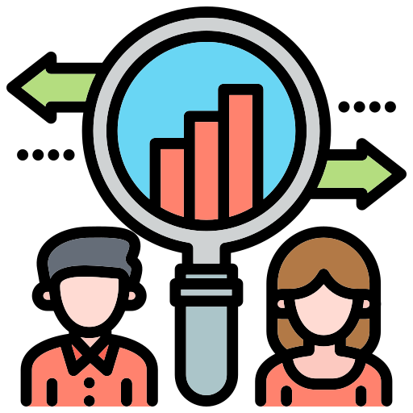

Education.
B.S, Honours. Computer Science - York University
- Courses: Programming for Mobile Computing, Web Development, Software Tools, Advanced Object-Oriented Programming, Fundamentals of Data Structures, Intro. to The Theory of Computatoin, Intro. to Logic for Computer Science,User Interface, Discrete Math, Calculus, Economics, Probabilities.
- Technical Skills: Java, C, HTML, CSS, Bootstrap, JavaScript, Angular.js, Node.js, ASP.NET, SQL, Unix/Linux, Git, REST, Bash, Microsoft Tools, Agile, Project Management, Power Automate, Power BI, Power Apps, Microsoft Azure.
Work Experience.
Software Engineer Co-op, Ontario Power Generation
- Leading a kiosk project for maintenance shops at DNGS and PNGS, I am responsible for developing a location and crew-specific app that enhances productivity and efficiency. By managing the project budget to under $50k and coordinating with plant managers, stakeholders and vendors, I aim to deliver successful outcomes for the project.
- Accomplished full-stack software developer proficient in Angular.js, SQL, JavaScript, CSS, and HTML with a focus on problem-solving and reliability.
- Developed an operation support application for maintaining maintenance shop scorecards in power plants with a web application frontend in Angular and a backend in ASP.net.
- Embedded the application in CFAM dashboard of OPG, which has over 120k hits, and prepared Power BI reports.
- Contributed to the development of the internal Dashboard, an application that provides employees with quick access to important information, including nuclear power plant statistics and training qualifications.
- Resolved bugs and issues in the internal Dashboard application to enhance functionality and user experience.
- Hosted weekly meetings with stakeholders to ensure software verification and collaborated with a team using Azure DevOps, Git versioning and Agile SDLC.
- Projects include the ScoreCard application, Kiosk project and internal employee web applications.

Social Researcher
- Conducted an academic research using approved protocols with general population households on issues of social and academic interest.
- Collecting information for various research projects that include population health, education, social service delivery, and voting behavior.
- Weekly survey count went up by 10%. Projects were delivered before due dates.

Mentor
- Taught a group of 20-25 students the unrevealed algorithms under the guidance of Professor Amir H. Chinaei.
- Monitored students' progress from week to week, so that I was able to tailor the curriculum according to each students’ strengths and weaknesses.
- Organizing team meetings and fun sessions to encourage teamwork and integrative work culture.